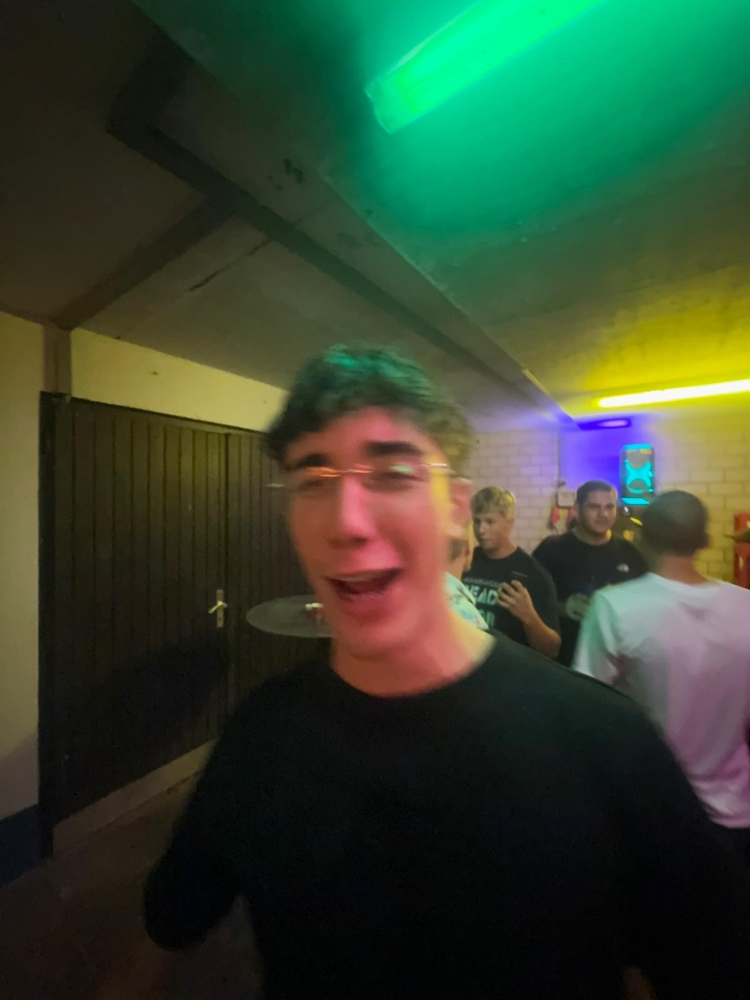
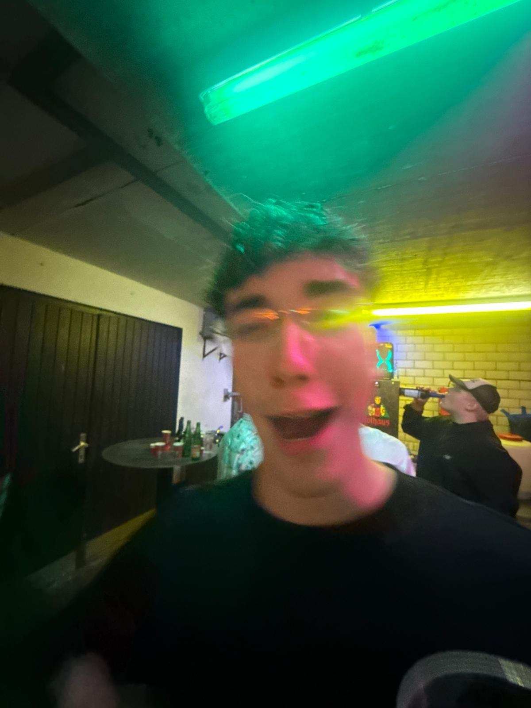
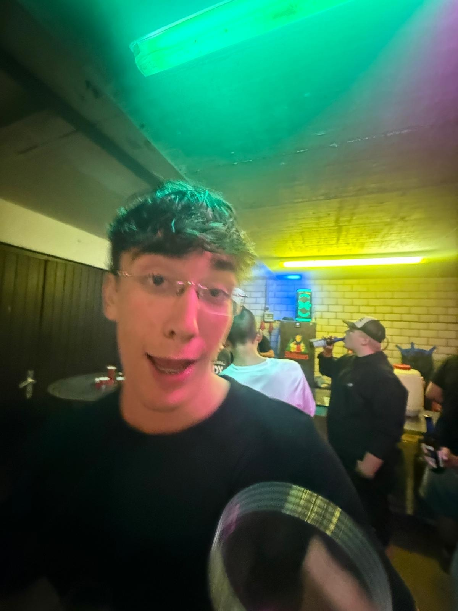

+++ Eilmeldung +++Ziege weiterhin flüchtig ++ Innenministerium beruft Krisenstab „Capra" ein ++ Garage vorerst gesichert ++ Anwohner werden gebeten, Mülltonnen ins Haus zu holen ++ DFB prüft Vorfall aus ungeklärten Gründen ebenfalls ++
Der Garagen-Kurier
Unabhängig · Unbestechlich · Unscharf
Donnerstag, 7. August 2026Ausgabe Nr. 1 · Preis: unbezahlbar
Exklusiv · Die Ziegen-Affäre · Teil 1–4 einer Recherche
2:00 Uhr, Industriegebiet: Die Nacht, in der eine Ziege die Machtfrage stellte
Er wollte nur nach Hause. Sie wollte offenbar mehr. Rekonstruktion einer Verfolgungsjagd, die alles verändert hat – zumindest für einen einzelnen jungen Mann und ein mittelgroßes Gewerbegebiet.
Von H.-J. Bock, Chefreporter Huftier-Ressort7. August 2026, 04:12 UhrLesezeit: 14 Minuten (gefühlt: 3 Tage)1.204 Kommentare
Es ist die Geschichte einer Nacht, die niemand wollte und die doch jeder kennt. Gegen 2:00 Uhr verlässt ein junger Mann – Name der Redaktion bekannt, Frisur der Öffentlichkeit bekannt – eine Garagenfeierlichkeit im Industriegebiet. Er ist müde, zufrieden, arglos. Was er nicht ahnt: In den Schatten zwischen Reifenhandel und Getränkegroßmarkt wartet sie bereits. Die Ziege.
Was dann geschieht, rekonstruiert diese Redaktion aus über 40 Sprachnachrichten, drei sich widersprechenden Erinnerungen und einem verwackelten Video, auf dem ausschließlich ein Bordstein zu sehen ist. Fest steht: Das Tier nahm ohne erkennbaren Anlass die Verfolgung auf. Zeugen beschreiben ein „zielstrebiges, fast dienstliches Traben". Der junge Mann habe zunächst versucht, die Lage diplomatisch zu lösen („Ey, was willst du?"), sei dann aber zügig zu einer bewährten Strategie übergegangen: Rennen.
„Ich habe in dreißig Jahren Industriegebiet viel gesehen. Aber noch nie einen Menschen, der so schnell an einer Waschanlage vorbeigelaufen ist. Die Ziege war trotzdem schneller."
Ein Nachtwächter, der anonym bleiben möchte, weil er eigentlich geschlafen hat
Die Flucht führte nach übereinstimmenden Angaben über den Parkplatz eines Sanitärgroßhandels, durch eine Hecke, die sich später als Zaun herausstellte, und einmal komplett um eine Lagerhalle herum – wobei Ziege und Verfolgter sich zwischenzeitlich entgegenkamen, was beide Seiten sichtlich irritierte. Erst in Höhe der Bushaltestelle „Gewerbepark Nord" brach das Tier die Verfolgung ab. Warum, ist Gegenstand laufender Ermittlungen. Experten vermuten: Desinteresse.
Die Polizei bestätigte den Vorfall auf Anfrage in bemerkenswerter Ausführlichkeit. „Die Ziege gilt weiterhin als flüchtig", erklärte ein Sprecher. „Wir raten der Bevölkerung, sich normal zu verhalten. Sollte das Tier auftauchen, gilt: keine hektischen Bewegungen, kein Blickkontakt, keine Diskussionen. Ziegen gewinnen jede Diskussion."
„Aus verhaltensbiologischer Sicht ist das Muster eindeutig: Die Ziege hat nicht angegriffen. Die Ziege hat eskortiert. Dass der junge Mann das als Verfolgung empfand, sagt mehr über ihn als über die Ziege."
Prof. Dr. Mecker-Lindwurm, Institut für angewandte Ziegenverhaltensforschung, auf Anfrage um 3 Uhr nachts erstaunlich gesprächig
Chronologie einer Eskalation
01:52Der junge Mann verabschiedet sich „nur ganz kurz". Historiker werden diesen Moment später als Anfang vom Ende bezeichnen.
02:01Erster Sichtkontakt. Die Ziege steht unter einer Laterne, „wie bestellt und nicht abgeholt" (Zeugenaussage).
02:03Diplomatische Phase („Ey, was willst du?"). Scheitert nach vier Sekunden.
02:04Beginn der Verfolgungsjagd. Streckenrekord auf dem Abschnitt Waschanlage–Sanitärgroßhandel (unbestätigt).
02:09Zwischenfall an der Hecke, die ein Zaun war. Materialschaden: eine Hose, emotional.
02:14Die Ziege bricht die Verfolgung an der Haltestelle „Gewerbepark Nord" ab und blickt noch einmal zurück. Zeugen sprechen von „Verachtung".
02:31Der junge Mann erreicht die Garage. Erste Umarmungen, erste Übertreibungen.
04:12Diese Redaktion beschließt, alles andere abzusagen. Das hier ist jetzt unser Leben.
Bleibt die Frage nach dem Motiv. Wollte die Ziege etwas mitteilen? War es eine Verwechslung? Oder, wie ein Kommentator im Netz mutmaßt, „einfach eine Ziege, die Ziegen-Sachen macht"? Die Wahrheit liegt, wie so oft, irgendwo im Industriegebiet. Diese Redaktion bleibt dran. Wir haben ja sonst nichts.
Fahndungsaufruf
🐐Phantombild (Ähnlichkeit: erschreckend)
Gesucht: Ziege, ca. 60–80 cm Schulterhöhe, Fellfarbe „irgendwie ziegenfarben", letzter bekannter Aufenthaltsort: Bushaltestelle „Gewerbepark Nord". Besondere Kennzeichen: strafender Blick, hohes Lauftempo, kein Respekt.
Hinweise nimmt jede Dienststelle entgegen, die noch abnimmt:
☎ 0800 / ZIEGE-00 (kostenlos, aber sinnlos)
Panorama · Medizin
Exklusiv: Mann übersteht Rückbank – Ärzte sprechen von Wunder
Zwischen Kopfstütze und Gurtschloss: Wie ein junger Mann eine Autofahrt überlebte, die laut Augenzeugen „höchstens acht Minuten" dauerte.
Von Dr. med. K. Blinker, Ressort Fahrzeuginnenraum7. August 2026, 02:58 UhrLesezeit: 4 Minuten
Der Blick eines Mannes, der alles gegeben hat, ohne dass irgendjemand sagen könnte, wofür. Foto: Reuters/Garagenkorrespondent
Die Rückbank. Für viele nur ein Sitzmöbel, für ihn an diesem Abend: Schicksal. Aufnahmen, die dieser Redaktion exklusiv vorliegen, zeigen einen jungen Mann in einem Zustand, den Mediziner als „wach, aber nur formal" beschreiben. Der Blick geht nach unten, vermutlich Richtung Handy, möglicherweise Richtung innerer Leere. Beides gilt als altersgerecht.
Wie es zu der Fahrt kam, ist unklar. Klar ist nur: Er hat sie überstanden. „Der Körper eines jungen Mannes um zwei Uhr nachts ist zu erstaunlichen Dingen fähig", erklärt ein Notfallmediziner, den wir einfach so lange angerufen haben, bis er etwas Zitierfähiges sagte. „Aufrecht sitzen ist in diesem Zustand bereits eine Leistung, die man würdigen muss."
„Er hat die ganze Fahrt nichts gesagt. Irgendwann hat er einmal geseufzt. Wir haben das respektiert."
Der Fahrer, laut eigener Aussage „der einzige Erwachsene im Auto"
Die Familie bittet in dieser schweren Zeit um Privatsphäre, hat aber vorsorglich schon einmal alle Bilder in die Familiengruppe geschickt.
Wissenschaft · Erdbeben
Seismographen schlagen aus: Lachanfall erschüttert Garage – Behörden zunächst ratlos
Messstationen in drei Bundesländern registrierten die Erschütterung. Die Ursache: ein einzelner junger Mann, dem offenbar etwas sehr Lustiges gesagt wurde. Was, will niemand mehr wissen.
Von B. Richter-Skala, Ressort Geowissenschaften7. August 2026, 00:47 UhrLesezeit: 3 Minuten

Das Epizentrum, Sekunden nach dem Ereignis. Das grüne Licht ist kein Filter, sondern Zustand. Foto: Reuters/Garagenkorrespondent
Es begann als gewöhnlicher Abend unter Neonröhren. Dann, gegen 0:40 Uhr, das Beben. Der Geologische Dienst bestätigte auf Anfrage „eine signifikante Erschütterung mit Ursprung in einem Garagenkomplex", Stärke: „lustig bis sehr lustig" auf der nach oben offenen Richterskala des Humors.
Was genau den Lachanfall auslöste, konnte bis Redaktionsschluss nicht rekonstruiert werden. Drei Anwesende geben an, es sei „ein Witz über irgendwas" gewesen. Ein vierter besteht darauf, es sei gar kein Witz gewesen, sondern „einfach die Situation". Die Staatsanwaltschaft prüft, ob die Situation angemessen gewürdigt wurde.
„Er hat so gelacht, dass die Neonröhre geflackert hat. Oder die hat vorher schon geflackert. Auf jeden Fall hat sie geflackert."
Augenzeuge, hält sich selbst für die verlässlichste Quelle des Abends
„Wir bitten die Bevölkerung, weiterhin lustig zu bleiben, aber verantwortungsvoll."
Sprecher des Geologischen Dienstes, sichtlich müde
Eskalation · Fotokunst
Unter Lebensgefahr entstanden: Das verwackeltste Foto des Jahres – Jury „zutiefst bewegt"
Kein Stativ. Kein Fokus. Kein Plan. Warum dieses Bild trotzdem – oder gerade deshalb – in die Geschichte der Garagenfotografie eingehen wird.
Von L. Objektiv, Feuilleton7. August 2026, 01:15 UhrLesezeit: 5 Minuten

Im Vordergrund: Bewegung. Im Hintergrund: ein Mann, der der Flasche vertraut. Beides Kunst. Foto: Reuters/Garagenkorrespondent
Die Jury des „Goldenen Wackelkontakts", des wichtigsten Preises für unfreiwillige Fotografie, fand deutliche Worte: „Dieses Bild verweigert sich jeder Schärfe – und genau darin liegt seine Wahrheit." Der Fotograf selbst kann sich an die Aufnahme nach eigener Aussage „eher so mittel" erinnern, was Kritiker als höchste Form künstlerischer Hingabe werten.
Kunsthistorisch ordnet sich das Werk in die Tradition des Garagen-Expressionismus ein: der offene Mund als Urschrei der Jugend, die Unschärfe als Kommentar zur Unübersichtlichkeit der Gegenwart, der trinkende Mann im Hintergrund als stiller Chronist. „Man weiß nicht, ob das Foto beim Springen, Stolpern oder Fallen entstand", so die Jury. „Vermutlich bei allem gleichzeitig."
„Ich habe geweint, als ich es sah. Allerdings vor Lachen, das muss man dazusagen."
Jurymitglied, wollte eigentlich nur ein Wasser holen
Das Original hängt ab sofort dort, wo alle bedeutenden Werke dieser Epoche hängen: in einer WhatsApp-Gruppe mit 14 Teilnehmern, von denen drei „Haha" reagiert haben.
Reportage · Innenansichten
Er war mittendrin: Der Mann, der die Garage von innen sah – ein Protokoll
Andere reden über die Garage. Er war da. Das Protokoll einer Nacht zwischen Werkbank, Musikbox und der Erkenntnis, dass es Stühle nie für alle gibt.
Von A. Torblatt, Chefreporterin Innenräume7. August 2026, 01:38 UhrLesezeit: 6 Minuten

Der Zeitzeuge, umgeben von weiteren Zeitzeugen, die alle dasselbe bezeugen: Es war laut. Foto: Reuters/Garagenkorrespondent
Wo genau verläuft die Grenze zwischen Dabeisein und Mittendrinsein? Dieses Dokument beantwortet die Frage ein für alle Mal. Man beachte die Körperhaltung: vorgebeugt, präsent, bereit. Man beachte den Hintergrund: Menschen, die es nie auf eine Titelseite geschafft hätten – bis heute.
Sein Protokoll der Nacht, das dieser Redaktion in Auszügen vorliegt, umfasst Sätze von historischer Wucht: „Dann waren wir halt da." – „Dann war das halt so." – „Dann sind wir halt geblieben." Historiker vergleichen die Quellenlage bereits mit mittelalterlichen Klosterchroniken, „nur ehrlicher".
„Er stand einfach da, mitten im Geschehen, und hat das Geschehen dadurch erst zum Geschehen gemacht. Vorher war es nur eine Garage mit Leuten drin."
Soziologe, war nicht dabei, hat aber trotzdem eine Meinung
Auf die Frage, was er künftigen Generationen mitgeben wolle, antwortete der Zeitzeuge nach langem Nachdenken: „Komm einfach vorbei." Mehr, so Experten, muss man über diese Nacht nicht wissen. Mehr weiß auch keiner.
Panorama · Die Lage am Abend
Nach Stunden der Eskalation: Ein Moment der Stille – Nation hält den Atem an
Zwischen grünem und rosa Licht geschah das Unfassbare: nichts. Ein Land verneigt sich vor der ruhigsten Sekunde des Abends.
Von M. Pausen-Clausen, Ressort Besinnung7. August 2026, 03:20 UhrLesezeit: 2 Minuten (bitte langsam lesen)
Ein Mann, ein Blick, keine Ereignisse. Beobachter sprechen vom „stillsten Bild seit Erfindung der Garage". Foto: Reuters/Garagenkorrespondent
Es gibt Momente, in denen die Geschichte den Atem anhält. Dieser hier dauerte Zeugenaussagen zufolge etwa vier Sekunden – dann lief wieder ein Lied, „das alle kannten". Doch diese vier Sekunden, festgehalten in Grün und Rosa, gehören jetzt der Ewigkeit.
Was in ihm vorging, weiß niemand. Analysten vermuten eine Mischung aus „Wo ist mein Getränk?", „Was war das für eine Ziege vorhin?" und dem großen, alterslosen „Egal". Das Bundesinstitut für Stimmungslagen stufte den Moment als „national bedeutsam" ein und empfahl, ihn nicht zu zerreden. Wir tun es trotzdem. Es ist unser Beruf.
„Für einen Moment war es fast andächtig. Dann hat jemand die Anlage lauter gemacht, und die Andacht war vorbei. Auch schön."
Augenzeugin, stand direkt daneben und „wollte eigentlich gar nichts sagen"
Investigativ · Die Lippen-Frage
Kriegsreporter der Garagenfront: Woher stammt die mysteriöse Verletzung an der Lippe? Eine Spurensuche
Ein Kratzer, ein Pflaster, tausend Fragen. Unsere Rechercheredaktion hat Hinweise verfolgt, Zeugen befragt und am Ende vor allem eines gefunden: weitere Fragen.
Von S. Pflaster & T. Wunde, Investigativteam7. August 2026, 05:02 UhrLesezeit: 8 Minuten
Das Beweisstück A der Nation: eine Oberlippe mit Vergangenheit. Foto: Reuters/Garagenkorrespondent
Er schweigt. Die Lippe nicht. Was diese Nahaufnahme zeigt, beschäftigt inzwischen Stammtische, Familiengruppen und mindestens einen besorgten Hausarzt: eine kleine, fachmännisch versorgte Verletzung an der Oberlippe. Herkunft: offiziell ungeklärt. Inoffiziell: erst recht ungeklärt.
Die Theorien reichen von „Türrahmen" über „Flaschenöffner-Zwischenfall" bis zu „das war schon immer da". Doch eine Spur wiegt schwerer als alle anderen. Ermittlerkreise bestätigten dieser Redaktion, man schließe „einen Zusammenhang mit dem flüchtigen Tier ausdrücklich nicht aus". Zur Erinnerung: Die Ziege ist weiterhin nicht gefasst. Die zeitliche Nähe der Ereignisse ist, so ein Sprecher, „auffällig, aber kein Beweis". Die Lippe war für eine Stellungnahme nicht zu erreichen.
„Ich sage nur so viel: Als er zurückkam, hatte er das Pflaster. Als er ging, hatte er es nicht. Dazwischen liegt die Ziege. Rechnen Sie selbst."
Zeuge aus dem engeren Garagenumfeld, spricht nur gegen Chips
„Verletzungsmuster dieser Art sind mit einem Ziegenkontakt vereinbar. Aber auch mit ungefähr allem anderen, was man nachts um zwei so macht."
Rechtsmedizinerin, bereut den Rückruf
Diese Redaktion bleibt an der Lippe dran. Journalistisch, versteht sich.
Justiz · Der Zeugenstand
Der Kronzeuge: Dieser Mann hat alles gesehen – und grinst immer noch
Er saß in der ersten Reihe der Geschichte, genauer: auf dem Beifahrersitz. Was er weiß, könnte alles verändern. Was er sagt: nichts. Was er tut: grinsen.
Von J. Protokoll, Gerichtsreporterin7. August 2026, 03:44 UhrLesezeit: 4 Minuten
Der Kronzeuge in der Nacht der Nächte. Sein Grinsen gilt als das am besten dokumentierte Beweisstück des Verfahrens. Foto: Reuters/Garagenkorrespondent
Jede große Affäre hat ihren Schlüsselzeugen. Die Ziegen-Affäre hat ihn auch – und er trägt weißes Shirt, sitzt im Dunkeln und grinst, als wüsste er etwas, das wir alle nicht wissen. Ermittler bestätigen: Genau das ist das Problem.
Mehrfach wurde er gebeten, seine Version der Ereignisse zu schildern. Seine bislang ausführlichste Aussage lautet wörtlich: „Digga." Juristen streiten seither, ob das als Aussage, Bewertung oder Verfassungskommentar zu werten ist. Einigkeit besteht nur in einem Punkt: Das Grinsen war schon vor der Ziege da – und es wird die Ziege überdauern.
„Er hat vom Beifahrersitz aus alles gesehen: die Ziege, die Flucht, den Zaun, der eine Hecke sein wollte. Und was macht er? Er grinst. Seit Stunden. Wir machen uns langsam Sorgen. Schöne Zähne übrigens."
Ermittlungsnahe Kreise, also seine Kumpels
Sein Anwalt – ein Freund, der einmal eine Folge einer Anwaltsserie gesehen hat – ließ ausrichten, sein Mandant werde sich „zu gegebener Zeit" äußern. Auf Nachfrage, wann das sei, grinste auch der Anwalt.
Umfrage des Tages
Was wollte die Ziege wirklich?
Rache – wofür, weiß nur die Ziege41 %
Sie wollte auch nur auf die Party27 %
Verwechslung – sie hielt ihn für eine andere Ziege19 %
Es gibt keine Ziege. Es gab nie eine Ziege.13 %
Basis: 4.812 Stimmen, davon 4.811 aus derselben Garage. Repräsentativ für genau diese Garage.
Ich kenne diesen Jungen nicht, aber ich habe trotzdem Angst um ihn. Hat er eine Jacke dabei? In so einer Garage zieht es doch. Und die Ziege soll bitte auch eine Jacke anziehen.
Ziegenfanclub_Nordwest e.V.vor 2 Stunden
Wir distanzieren uns in aller Deutlichkeit von der Berichterstattung. Die Ziege hat sich zu jedem Zeitpunkt ziegentypisch verhalten. FREIHEIT FÜR DIE KOLLEGIN! Beitrittsformulare wie immer am Vereinsheim.
R. Klabusterberg (Gemeinderat, parteilos)vor 1 Stunde
Ich fordere seit 2019 eine Beleuchtungsoffensive im Industriegebiet und sehe mich durch die Ereignisse voll bestätigt. Mit ausreichend LED wäre die Ziege gar nicht erst in Stimmung gekommen. Näheres in meiner Sprechstunde.
Opa_Herbert_Originalvor 58 Minuten
Früher wurde man auch von Ziegen gejagt, aber da hat man noch nicht so ein Theater gemacht. Man ist einfach schneller gelaufen. Trotzdem schönes Foto von dem Jungen, sieht aus wie meiner, nur unschärfer.
Die_Ziege_Selbst_Offiziellvor 44 Minuten
Ich werde mich zu den Vorwürfen zu gegebener Zeit äußern. Mäh.
Garagennachbar_Klausvor 12 Minuten
Alles gut und schön, aber wer stellt eigentlich meine Mülltonne wieder hin? Die stand da nicht ohne Grund. Ansonsten Gratulation zur Feier, hörte sich gelungen an. Bis ca. 4 Uhr. Sehr gelungen.
In eigener Sache – Korrektur
In einer früheren Version dieses Artikels hieß es, die Ziege sei gefasst worden. Das war falsch. Die Ziege ist nicht gefasst. Die Ziege war nie gefasst. Nach Einschätzung der Redaktion ist die Ziege im Zweifel gefasster als wir alle. Wir bedauern.
Sie haben Ihr kostenloses Kontingent an Ziegen-Journalismus fast erreicht.
Unterstützen Sie unabhängige Garagen-Berichterstattung. Unsere Reporter riskieren alles – vor allem ihren Ruf.
0,00 €
pro Monat · für immer · niemals kündbar, weil nie abgeschlossen
Mit Klick auf den Button stimmen Sie exakt gar nichts zu. Es passiert nichts. Wie bei den meisten Abos, nur ehrlich.